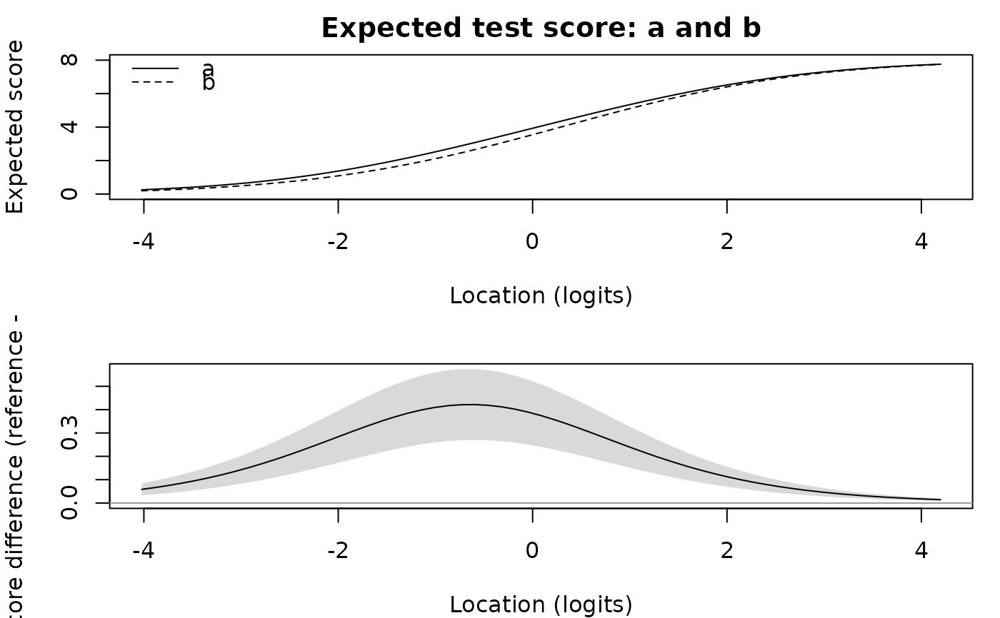

Measures how much a test, or a bundle of its items, functions differently for one group of persons than for a reference group once the differential item functioning has been resolved. The item shifts a split leaves behind are combined into test-level and bundle-level differences in logits and in raw-score units, each with a standard error from the calibration covariance.
Usage
dtf(
fit,
by = NULL,
items = NULL,
bundles = NULL,
reference = NULL,
p_adjust = "holm",
alpha = 0.05,
grid = 61L
)Arguments
- fit
A
resolve_difresult, araschfit whose items were split withsplit_items, or an ordinary fit together withitemsto split first.- by
The splitting factor: a person factor name (or several, for their joint cells) or a grouping vector with one entry per person. Taken from the resolution when
fitis aresolve_difresult that split by one factor.- items
Items to split by
bybefore measuring, for an ordinary fit.- bundles
Optional named list of source-item vectors, each with at least two items.
- reference
The level of
bythe other groups are compared with; the first level by default.- p_adjust
A method of
p.adjust. Adjustment covers the split-item contrasts and, separately, each test- or bundle-summary measure across its reported groups and bundles. Unavailable tests remain in their families.- alpha
Significance level for the adjusted probabilities.
- grid
Number of locations on which the curves are evaluated, spanning the fitted persons' locations.
Value
A list of class "rasch_dtf" with tables test (one
row per group), items (one row per source item and group),
bundles (NULL unless requested), scores (the
score-to-measure differences) and curves; anchors, the
unsplit items; groups, reference, by and
notes. Probabilities ending in _adj are adjusted;
flags and printed tables use these probabilities. ref_df gives
the reference degrees of freedom (infinite for independent persons).
Details
A resolved calibration (resolve_dif or
split_items) carries one copy of each split item per group
and a single copy of every unsplit item. The unsplit items are the
anchors: they are the items the resolution judged invariant, and they
place the groups' copies on one scale. Every difference reported here is
relative to that anchoring. A shift is positive when the test is harder
for the group than for the reference.
For group \(g\) and reference \(h\) with item sets \(I_g\) and \(I_h\) (identical apart from the split copies), the function reports:
- item shifts
\(\delta_{ig}-\delta_{ih}\) for each source item, zero by construction for an anchor, with a Wald test from the threshold covariance.
- mean shift
the average item shift over the test, the amount by which the group's copy of the test is harder on average.
- score-to-measure differences
\(\theta_g(r)-\theta_h(r)\), the difference between the measures the two item sets assign to the same raw score \(r\), from the expected-score equations \(\sum_{i\in I_g}E_i(\theta)=r\). This is the bias a person in the group would carry if scored on the reference calibration.
- curves
at each location \(\theta\), the expected-score difference \(T_h(\theta)-T_g(\theta)\) and the logit difference \(\theta-\tilde\theta\) where \(T_h(\tilde\theta)=T_g(\theta)\).
- test summaries
the curves averaged over the group's own persons at their estimated locations, signed (differences may cancel) and unsigned (they may not), in logits, in score units and as a percentage of the score range, with the largest score-unit difference among those persons.
Standard errors use the delta method: an item shift and the mean shift are linear in the thresholds, and for the score-to-measure and curve quantities \(\partial E_i/\partial\tau_{ik}=-\mathrm{Cov}(X_i, 1[X_i\ge k])\) and \(\partial E_i/\partial\theta=\mathrm{Var}(X_i)\). The unsigned summaries carry a delta-method standard error but no test: a folded difference has no null distribution at zero. These errors treat the selected splits, anchors and person locations used as averaging points as fixed. They do not include selection uncertainty or uncertainty in the population distribution of persons. Repeated-person calibrations use their supported cluster degrees of freedom for t and F references; otherwise the references are normal and chi-square.
A bundle (Douglas, Roussos and Stout 1996) is a named set of source
items. Its table gives the mean of its members' shifts with a Wald test,
a homogeneity test (do the members shift by the same amount?), and the signed
and unsigned expected-score differences over the bundle alone, as a
percentage of the bundle's score range. dif_anova tests
whether a bundle functions differently; this function sizes the
difference.
The homogeneity degrees of freedom are the rank of the shift-contrast
covariance; several unsplit members repeat the same fixed-zero shift.
References
Chalmers, R. P. (2018). Model-based measures for detecting and quantifying response bias. Psychometrika, 83(3), 696–732.
Douglas, J. A., Roussos, L. A. and Stout, W. (1996). Item-bundle DIF hypothesis testing: Identifying suspect bundles and assessing their differential functioning. Journal of Educational Measurement, 33(4), 465–484.
Andrich, D. and Hagquist, C. (2015). Real and artificial differential item functioning in polytomous items. Educational and Psychological Measurement, 75(2), 185–207.
See also
dif_anova for detecting item and bundle DIF,
resolve_dif for the resolution this function measures
and plot_dtf for the curves.
Examples
set.seed(1); n <- 600
d <- seq(-2, 2, length.out = 8); g <- rep(c("a", "b"), each = n / 2)
sh <- matrix(0, n, 8); sh[g == "b", 2:3] <- 0.8
X <- matrix(rbinom(n * 8, 1, plogis(outer(rnorm(n), d, "-") - sh)), n, 8)
colnames(X) <- paste0("I", 1:8)
fit <- rasch(data.frame(X, grp = g), factors = "grp")
d2 <- dtf(fit, by = "grp", items = c("I2", "I3"),
bundles = list(pair = c("I2", "I3")))
d2
#> Differential test functioning by grp (reference: a; 6 of 8 items anchor the groups)
#> Positive values: harder for the group than for the reference.
#> group n shift_mean se p_adj sDTF_logit uDTF_logit sDTF_score uDTF_score
#> b 300 0.218 0.041 < 0.001 0.244 0.244 0.311 0.311
#> sDTF_pct uDTF_pct
#> 3.892 3.892
#> Bundles:
#> group bundle n_items shift_mean se p_adj significant chisq_hom p_hom_adj
#> b pair 2 0.872 0.165 < 0.001 * 0.039 0.844
#> sDBF_score uDBF_score sDBF_pct
#> 0.311 0.311 15.569
#> Split items:
#> group item shift se p_adj significant
#> b I2 0.844 0.226 < 0.001 *
#> b I3 0.899 0.206 < 0.001 *
d2$scores
#> group score theta_reference theta_group shift se
#> b 1 -2.432 -2.114 0.318 0.065
#> b 2 -1.416 -1.092 0.325 0.063
#> b 3 -0.649 -0.357 0.292 0.055
#> b 4 0.048 0.288 0.240 0.045
#> b 5 0.747 0.930 0.183 0.034
#> b 6 1.522 1.652 0.130 0.025
#> b 7 2.549 2.635 0.087 0.017
plot_dtf(d2)
